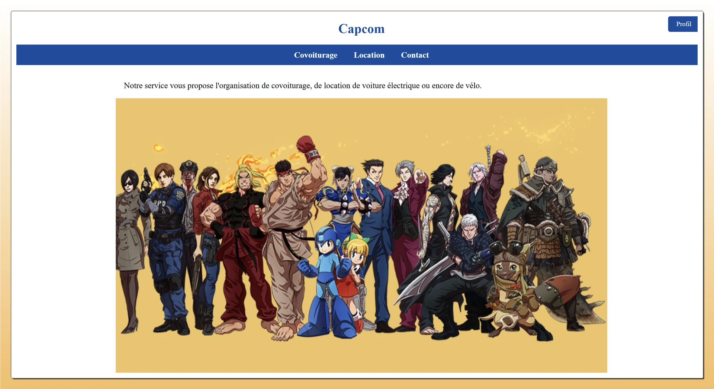
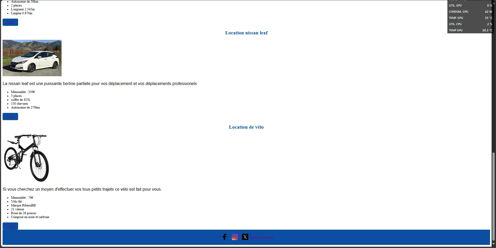

Aperçu du projet

Page d'accueil
Interface claire et moderne pour la recherche de trajets

Résultats de recherche
Affichage optimisé des trajets disponibles

Inscription
Formulaire d'inscription utilisateur responsive